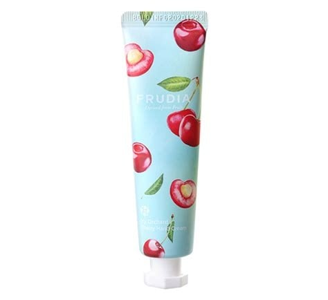
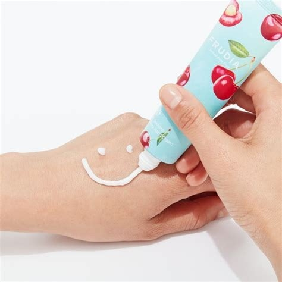
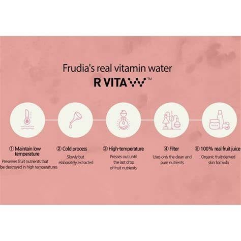
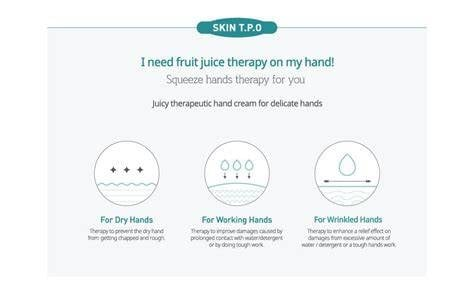

<div> <table style="border-collapse: collapse; width: 99.9809%;" border="1"><colgroup><col style="width: 49.9904%;"><col style="width: 49.9904%;"></colgroup> <tbody> <tr> <td> <div><span style="font-size: 14pt;"><strong>Frudia My Orchard Crema de maini, 30g</strong></span></div> <div><span style="font-size: 14pt;">Crema de m&acirc;ini Frudia My Orchard Cherry aduce prospețimea cireșelor zemoase &icirc;ntr-un tub cu design pastelat și atrăgător. Formulată cu extract bogat de cireșe obținut prin presare la rece, această cremă oferă hidratare intensă, catifelează pielea aspră și lasă un parfum fructat, subtil și persistent.</span></div> </td> <td></td> </tr> <tr> <td></td> <td><span style="font-size: 14pt;">Textura cremoasă, fină și bogată se absoarbe rapid &icirc;n piele fără a lăsa o peliculă grasă sau lipicioasă. Perfectă pentru utilizarea zilnică, oferă o senzație instantanee de confort și catifelare, transform&acirc;nd aplicarea &icirc;ntr-un moment ludic de răsfăț care protejează eficient m&acirc;inile &icirc;mpotriva deshidratării.</span></td> </tr> <tr> <td><span style="font-size: 14pt;">Secretul eficienței Frudia constă &icirc;n tehnologia patentată R VITA W. Acest proces unic de extracție la rece păstrează intacte vitaminele și nutrienții din fructe, fără distrugere termică. Filtrată riguros, formula oferă pielii tale un suc de fructe 100% real pentru o terapie naturală ultra-hrănitoare.</span></td> <td></td> </tr> <tr> <td></td> <td><span style="font-size: 14pt;">O cremă terapeutică suculentă concepută pentru trei nevoi majore: salvează m&acirc;inile extrem de uscate și aspre, repară pielea afectată de muncă fizică, apă sau detergenți și &icirc;mbunătățește elasticitatea pielii ridate. Tratamentul ideal care redă instantaneu finețea și aspectul t&acirc;năr al m&acirc;inilor delicate.</span></td> </tr> </tbody> </table> </div>